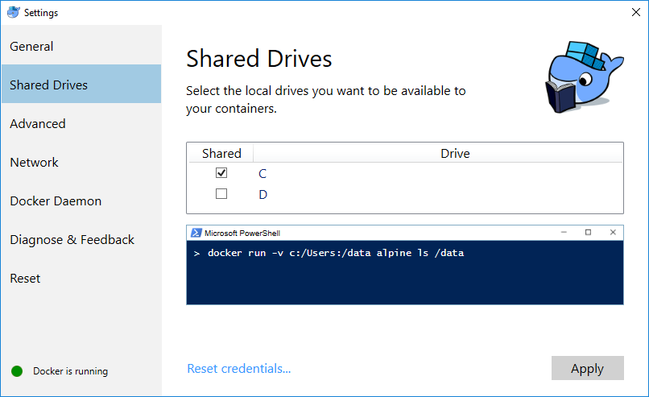

Ubuntu Xenial (16.04 LTS)
for Web development
Created by Anthony ARNAUD / @bluelogon - 10/06/2016
Why linux ?
Strengths
- Free
- Open source
- Community
- Customisable
- Secured
- Stability
- No Blue Screen of Death
Weakness
- Microsoft Office
- Difficult for newbie (format by school)
- Property driver/protocol support
- Graphical interface
So, Docker on Microsoft Windows ?
Docker Benchmarking
- on Ubuntu 16.04
- on Windows 10 with VirtualBox
- on Windows 10 with Hyper-V (Docker Beta)
Windows errors
-
Hyper-V
ln: failed to create symbolic link 'symlink': Operation not supported
-
VirtualBox
ln: failed to create symbolic link 'symlink': Protocol error
Docker and the security
Docker and the security
Docker benchmarking conclusion
-
Using Linux Virtual Machine on Windows
- Insignificant overhead CPU and Memory
-
The shared between Windows and linux is the problem :
- VBoxSF protocol with Boot2Docker (VirtualBox)
- CIFS protocol with Docker Beta (Hyper-V)
- Some linux filesystems features don't work (Symbolic link, Inotify)
- Native performance on Linux host
GNU/Linux distribution :

Ubuntu
- Ubuntu : humanity towards others
- Initial release : 20 October 2004
- License : Free software licenses (mainly GPL)
- User interface : Unity
- Development led by UK-based Canonical Ltd
- Canonical is owned by South African entrepreneur, Mark Shuttleworth
- Microsoft would support Ubuntu Bash
- Enterprise support
- Long Time Support (LTS): 3 years on Ubuntu Desktop and 5 years on Ubuntu Server
New features and changes
Linux kernel 4.4
- LTS version
- TCP code has been refactore
- ...
Python
- Python 3 on server
- Python 2 on desktop
- Python 2 and 3 can coexist